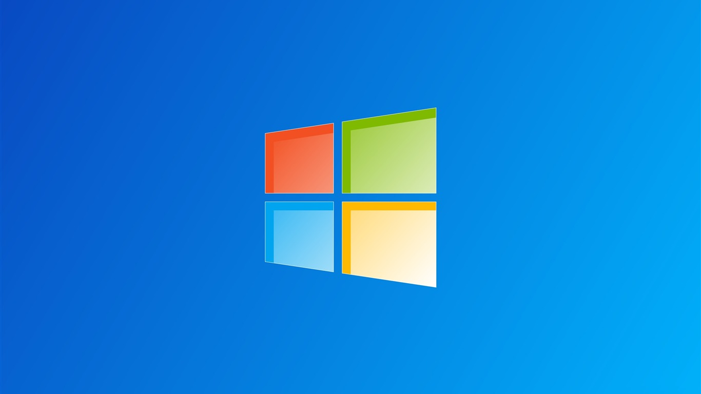

Em meados dos anos de 1975 surgem no mercado da informática a empresa Microsoft, com seus fundadores Bill Gates e Paul Allen. A empresa Microsoft tinha como objetivo disponibilizar para outras empresas e pessoas físicas um sistema operacional, onde qualquer pessoa pudesse operar um computador e realizar tarefas simples como trabalhar com software de escritório e acessar a internet.
mesma época também surge no mercado da informática dois outros personagens, muito conhecidos atualmente, os famosos Steve Jobs e Steve Wosniak, esses desenvolveram o primeiro computador pessoal chamado de Apple. Não muito distante de todo esse sucesso da Apple, a empresa IBM em meados dos anos de 1983, em conjunto com a empresa Microsoft lançam no mercado o computador IBM PC, também um computador pessoas, este continha um sistema operacional chamado de MS DOS 2.0. Se formos comparar essa briga pelo mercado da informática já ocorre há muito tempo com disputas muito louváveis, mas vamos levar em consideração que os maiores beneficiados com o desenvolvimento dessas empresas, com o lançamento desses produtos somos nós usuários. Entretanto desde o início os computadores da empresa Apple tinham autos custos e eram destinadas para um público alvo diferenciado, por outro lado a empresa Microsoft tinha o objetivo de levar seus equipamentos para, um número muito grande de pessoas, pelo mundo todo, com preços mais razoáveis e acessíveis para diversas pessoas.